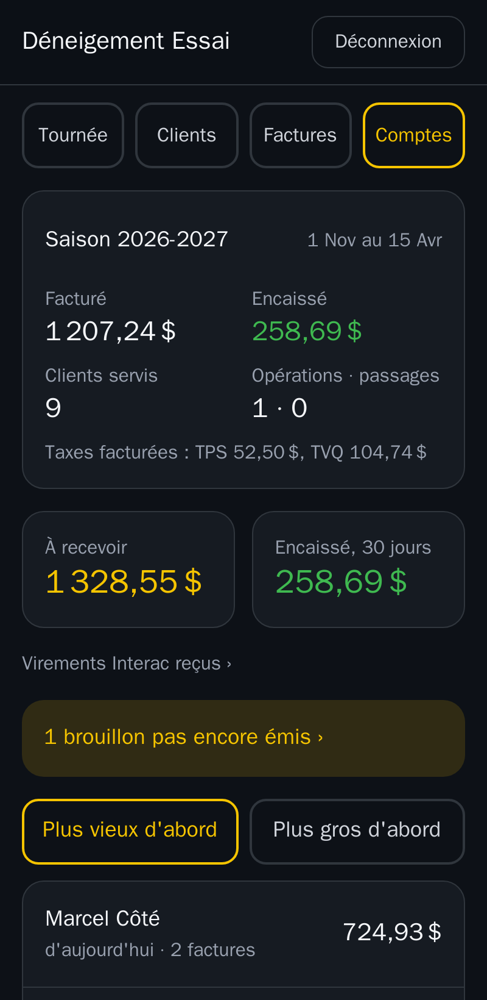

Le Déneigeur
Le DéneigeurLe logiciel du déneigeur, dans la poche du manteau.
Vos clients, votre tournée, vos factures et votre argent à recevoir, sur le cellulaire. Pensé pour la tempête : gros boutons qu'on touche avec des gants, et ça fonctionne même sans réseau.

Ce que Le Déneigeur fait pour vous
Fait au Québec, en français, pour les petites et moyennes entreprises de déneigement : celles qui tiennent encore leurs comptes sur papier, et celles qui veulent un outil plus simple.
La tournée
Vos arrêts dans votre ordre, Fait ou Sauté d'une tape, navigation vers Apple Plans, Google Maps ou Waze. Les passages notés sans réseau partent tout seuls au retour du signal.
Les clients avisés
Avis par texto au début de la tempête et quand vous approchez de leur entrée. Moins d'appels, moins de voitures dans le chemin.
Les factures
Factures avec TPS et TVQ faites au cellulaire, numérotées, en PDF, envoyées par courriel. Les versements du contrat de saison se préparent tout seuls.
Comptant et Interac
Paiement comptant noté en passant, reçu envoyé au client. Les avis de virement Interac sont lus et proposés sur la bonne facture : vous confirmez d'une tape.
Les comptes à recevoir
Qui vous doit quoi, depuis quand. Rappel, deuxième avis, dernier avis : une relance polie, facture jointe, en un geste.
Les messages au même endroit
Textos et courriels de vos clients classés dans leur fiche. Une plainte ou un oubli devient une demande à suivre jusqu'à ce qu'elle soit réglée.
Vos clients déjà dans l'app
On importe votre liste à partir d'un fichier Excel, de vos papiers, ou de l'export de votre logiciel actuel.
Seul ou en équipe
Seul, vous faites tout. En équipe, vos employés suivent la tournée et marquent leurs passages; vous gardez la main sur les clients et l'argent.
Les écrans
Captures de l'application, avec des clients fictifs.



Le prix
Un prix simple : un abonnement au mois, avec un volume de messages compris.
par mois, par entreprise (taxes en sus)
- Toutes les fonctions, sans module à ajouter
- Votre adresse vous@ledeneigeur.com
- Mises à jour et sauvegardes comprises
Un volume de textos et de courriels est compris chaque mois. Au-delà, le surplus est facturé selon le volume.
- Vous voyez ce que vous avez envoyé chaque mois
- Détails sur demande
Questions
Faut-il installer quelque chose?
Non. Le Déneigeur s'ouvre dans le navigateur du cellulaire et s'ajoute à l'écran d'accueil comme une application. Il fonctionne aussi sur un ordinateur.
Et s'il n'y a pas de réseau sur la route?
L'écran de tournée reste utilisable sans réseau. Les passages notés sont gardés dans le téléphone et envoyés dès que le signal revient, avec la bonne heure.
Mes clients vont-ils recevoir des textos de mon cellulaire personnel?
Non. Les textos partent d'un numéro d'affaires, et les réponses de vos clients arrivent dans l'application, dans leur fiche.
J'utilise déjà un autre logiciel. Je perds mes clients?
Non. Exportez votre liste de clients de votre logiciel actuel (Excel ou CSV) : on l'importe, adresses, téléphones, prix et soldes compris.
Mes données sont-elles à moi?
Oui. Elles sont sauvegardées deux fois par jour, et vous pouvez en obtenir une copie complète.
Nous écrire
Une question, une démonstration avec vos propres données : appelez-nous, on vous répond rapidement.
514 360-3227SLAPP Technologies Inc.
204, rue Saint-Charles, bureau 103, Sainte-Thérèse (Québec) J7E 2B4